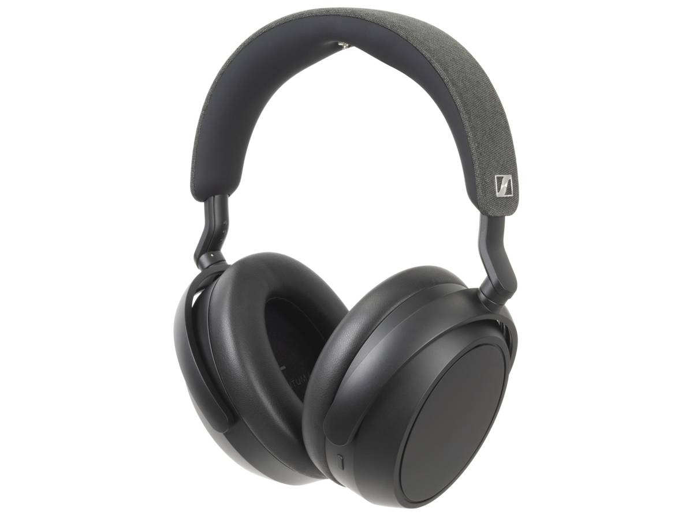

Présentation
Le Sony WH-1000XM5 redéfinit les standards des casques à réduction de bruit. Son design minimaliste et sa technologie audio avancée en font une référence incontournable pour les audiophiles. Polyvalent, moderne et confortable, il combine élégance et performance.
Critique complète
Le Sony WH‑1000XM5 s’impose comme l’un des meilleurs casques à réduction de bruit du marché. Son design épuré, sa finition douce au toucher et son confort exceptionnel le rendent agréable à porter pendant des heures, que ce soit au bureau ou en déplacement.
Côté audio, Sony livre une performance impressionnante : les basses sont puissantes sans être lourdes, les médiums bien équilibrés et les aigus précis. Que vous écoutiez du jazz, du pop ou des podcasts, le son reste clair et immersif. La réduction de bruit, elle, est tout simplement bluffante, coupant presque totalement le monde extérieur.
Le casque se démarque aussi par ses fonctions intelligentes — comme la pause automatique quand on le retire ou la connexion à deux appareils à la fois. L’application Sony Headphones Connect permet d’ajuster facilement les réglages audio selon vos préférences.
Avec 30 heures d’autonomie et une recharge rapide très pratique, le WH‑1000XM5 est un compagnon idéal pour ceux qui recherchent la tranquillité et la qualité. Son seul vrai défaut reste son prix élevé, mais il est largement justifié par la qualité globale de l’expérience.
Avantages et Inconvénients
Avantages
- Réduction de bruit exceptionnelle
- Autonomie de 30h
- Confort premium
- Qualité sonore haut de gamme
Inconvénients
- Prix élevé
- Design non pliable
- Commandes tactiles parfois sensibles
Galerie
Fiche technique
| Autonomie | 30 heures |
|---|---|
| Poids | 250 g |
| Bluetooth | 5.2 |
| Port de charge | USB-C |
| Réduction de bruit | Active (8 micros) |
| Codecs audio | LDAC, AAC, SBC |
| Compatibilité | iOS, Android, PC |
Verdict final
Le Sony WH-1000XM5 est un chef-d’œuvre audio. Malgré son prix, il offre une expérience sonore et un confort inégalés — un choix idéal pour les passionnés de musique et les voyageurs fréquents.
En savoir plusArticles similaires

Bose QuietComfort Ultra
Le concurrent direct de Sony, avec un confort exemplaire et une signature sonore douce.
Lire la critiqueApple AirPods Max
Le casque le plus luxueux d’Apple, alliant design et performances haut de gamme.
Lire la critique
Sennheiser Momentum 4 Wireless
Un casque élégant au son riche et précis, parfait pour les audiophiles qui recherchent une alternative haut de gamme.
Lire la critique